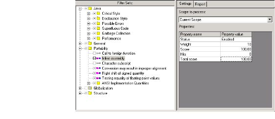

Caliper Window Components
When you launch a Caliper analysis, DIScover displays the default Caliper window. The left pane displays the query tree, while the right pane displays the names and values of selected items in the query tree.

Â